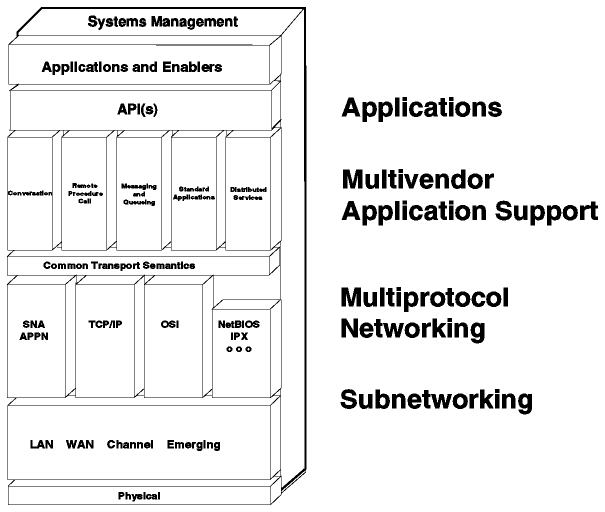
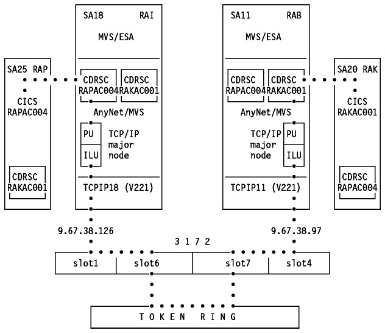
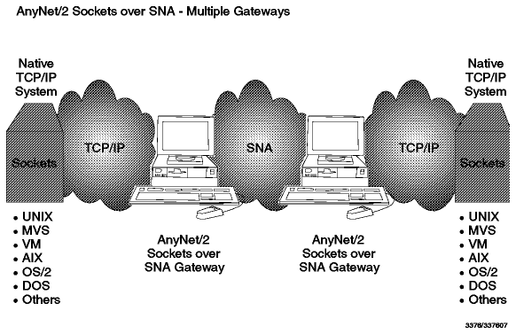

Table of Contents
Table of Contents  Information
Super Highway
Information
Super HighwayTable of Contents Information
Super Highway
In this section we will discuss the architectural and product support that IBM provides for the Internet.
In March 1992, IBM announced the Networking Blueprint which is, essentially, a framework for structuring network diversity and complexity with consistency and flexibility. solutions best suited to your needs, irrespective of networking protocols and vendors.
The Open Blueprint is an expansion of the Networking Blueprint and incorporates the entire Networking Blueprint. The lower portion of the Open Blueprint is identical to the Networking Blueprint. The upper portion of the Open Blueprint is an expansion of the applications and application support layers of the Networking Blueprint to show more detail in the application environment. In this section only the networking portion of the Open Blueprint is discussed in greater detail.
What was the reason for the Networking Blueprint?
An organization's networking requirements are driven by the need for specific applications. Often the application requires a specific network protocol because all applications are written for a specific Application Programming Interface (API). Here are some examples:
All other popular transport protocols protocols such as OSI, DECnet, NetBIOS and IPX provide their own specific APIs.
As a result of this, you have to have multiple separate networks composed of different protocols, hardware components, bandwidth capabilities and network-specific management capabilities. Besides this you need skill in all these different segments.
The goals of the Networking Blueprint are:
What the Networking Blueprint is not:
In order to reduce complexity, the Blueprint is separated into different
components which are discussed below. See
Figure - IBM Networking Blueprint.

Figure: IBM Networking Blueprint
The multivendor application support addresses the problem of application portability and interoperability across the widest possible set of hardware and operating system platforms. It is essential that applications be developed independently of the systems they will run on. Therefore a number of APIs are recommended when new applications are to be written. These recommended APIs are:
Most of these APIs are already available on the
following platforms: MVS, VM, OS/2, OS/400 and AIX/6000 as shown in
Table - Availability of APIs for IBM
Platforms.

Table: Availability of APIs for IBM Platforms
The APIs are available on many platforms from other vendors as well.
It is IBM's strategy to offer application enabling systems that allow porting to IBM and non-IBM systems.
The multiprotocol networking component addresses the problem of the multiplicity of networking protocols in most networks. A way of reducing the number of physical networks is a multiprotocol network processor such as the IBM 6611. It routes all the major protocols, including SNA APPN, and uses only standard mechanisms, such as OSPF, to communicate with other routers. In cases when standards do not exist, IBM contributes its technologies to the industry (for example, Data Link Switching (DLSw) was published as IETF RFC 1434).
The even more important step in this direction is the Multi-Protocol Transport Networking (MPTN) architecture. This technology makes it possible to minimize the number of protocols that must be supported in a network, and more significantly on the desktops and servers, by decoupling the application from the networking layer. MPTN was submitted to X/Open in December 1991. The IBM AnyNet product family fulfills this architecture. MPTN is part of the Common Transport Semantics (CTS) layer in the Blueprint. The CTS works as shown in Figure - Common Transport Semantics.
CTS architecture offers:
Please see AnyNet for further information and a list of products already available. For an architectural description see MPTN Architecture Tutorial and Product Implementations.
The subnetworking component addresses the rapid evolution of the telecommunication technologies. It identifies and recommends the use of ITU-T, IEEE and similar industry standards, to permit building LANs and WANs that are protocol transparent. The strategic protocols are 802.3, 802.5, X.25, frame relay (RFC 1490) and ATM. IBM's strategy fully acknowledges that tomorrow's networks will mostly be based on the ATM technology, which will allow the integration of audio, video and data and be an essential enabler for the full deployment of multimedia applications. An example of a product in this layer is the IBM 2220 Nways BroadBand Switch.
The system management component is the necessary glue that makes any network, large or small, operable. Network management applications will be written in such a way that they are portable across, and can interoperate with, a wide variety of IBM and non-IBM management platforms.
The application portability will be achieved with the deployment of the OSF/DME technology, including common APIs such as XMP. Multivendor interoperability will come from supporting the CMIP, SNMP and SNA/MS network management protocols.
For further information on the IBM Networking Blueprint or IBM Open Blueprint please refer to the IBM publications G511-3096 and G326-0395.
The IBM AnyNet product family is the implementation of the Common Transport Semantics (CTS) in the IBM Networking Blueprint based on the emerging standard of Multiprotocol Transport Networking (MPTN). Please refer to Multiprotocol Networking described earlier in this chapter.
The idea behind AnyNet is to run matching applications which are designed to operate over one specific type of network over other networks. For example, you can run a host SNA printer application over a TCP/IP network. That means you don't have to install an SNA connection to this location beside the existing TCP/IP connection. The advantage of using AnyNet is the reduction of the number of different transport protocols. You can run all your applications over one kind of network if you like.
You have access from a TCP/IP workstation to any APPC database, terminal
emulation or printer application running on the host, such as CICS, IMS, DB/2,
or TSO. The "AnyNet partner" could be another AnyNet/2 station or AnyNet/MVS.

Figure: APPC over TCP/IP
With this you have access to Berkeley Software Distribution (BSD) Socket applications such as FTP, TELNET and NFS across an SNA network.
This gateway enables all native TCP/IP workstations to connect to similar
applications in an AnyNet/2 or AnyNet/MVS host across an existing SNA network.
It is also possible to install multiple gateways in order to connect two TCP/IP
networks across an existing SNA network. See
Figure - Multiple Gateways.

Figure: Multiple Gateways
Enables you to run NetBIOS applications such as IBM LAN Server and Lotus Notes over an existing SNA network.
This feature is available with VTAM 4.2 for MVS/ESA.
For details of Anynet implementations on selected platforms please see Table - AnyNet Availability.

The IBM Global Network is a business unit made up of Advantis in the USA, IBM Information Network organizations worldwide and wholly owned subsidiaries and joint ventures around the world providing a rich portfolio of value-added networking services.
IBM Global Network solutions are designed to ensure your success in the worldwide electronic marketplace, and feature:
You can connect to the IBM Global Network and extend your reach without having to manage the complexity of multi-vendor, multi-enterprise or multi-national network environments. Over 5,000 networking professionals in more than 60 countries design, install, manage and operate the network, saving you the cost of network hardware, software and personnel. For further information please refer to the Advantis web pages starting at http://www.ibm.net/adv/.
The IBM Internet Connection Services, a global service, is accessible in each country and provides full Internet access. The following services are available:
Included in the Bonus Pack of OS/2 Warp Version 3 is the Internet Access Kit which enables the user to connect to the Internet. Via a set of panels, you are requested to provide information needed for identification and registration. The billing is done via your credit card. The Internet Access Kit provides a complete set of Internet applications including WebExplorer, Gopher, Ultimail Lite, FTP etc.
Internet Connection for Windows provides a set of services and functions for the DOS/Windows environment that are similar to those described above for Warp. In particular, WebExplorer Mosaic provides WWW access capability. For more information about the World Wide Web refer to World Wide Web.
The home page for the IBM Internet Connection is: http://www.ibm.net/.
 Future
Future